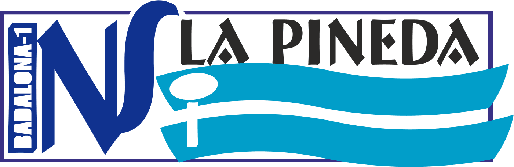

|  | Text d'exemple | Taula de dies | Formulari de contactes |
Amb una surpeficie de 700m2 .El nom de Badalona I, el va rebre l'any 1970,
quan va convertir-se en un institut de Formacio Professional
com a consequència de la recent aprovada Llei General d'Educació.
A partir d'aquest moment, la quantitat d'alumnes va anar augmentant:
L'any 1978, a causa d'aquest creixement de l'alumnat,
l' institut es divideix en dos, i es crea l'Institut Pompeu Fabra (Badalona II).